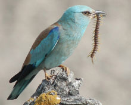
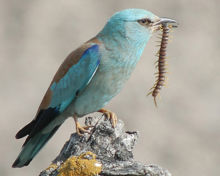

| European Roller | |
|---|---|
|  | |
| An adult Roller with a Centipede | |
| Conservation status | |
| Binomial name | |
| Coracias garrulus Linnaeus, 1758 |
| European Roller | |
|---|---|
|  | |
| An adult Roller with a Centipede | |
| Conservation status | |
| Binomial name | |
| Coracias garrulus Linnaeus, 1758 |
The European Roller, Coracias garrulus, is the only member of the roller family of birds to breed in Europe. Its overall range extends into the Middle East and Central Asia and Morocco.
There are two subspecies: the nominate garrulus, which breeds from in north Africa from Morocco east to Tunisia, southwest and south-central Europe and Asia Minor east through northwest Iran to southwest Siberia; and semenowi, which breeds in Iraq and Iran (except northwest) east to Kashmir and north to Turkmenistan, south Kazakhstan and northwest China (west Xinjiang). The European Roller is a long-distance migrant, wintering in southern Africa in two distinct regions, from Senegal east to Cameroon and from Ethiopia west to Congo and south to South Africa.
It is a bird of warm, dry, open country with scattered trees, preferring lowland open countryside with patches of oak Quercus forest, mature pine Pinus woodland with heathery clearings, orchards, mixed farmland, river valleys, and plains with scattered thorny or leafy trees. It winters primarily in dry wooded savanna and bushy plains, where it typically nests in tree holes.
The European Roller is a stocky bird, the size of a Jackdaw at 29–32 cm in length with a 52–58 cm wingspan; it is mainly blue with an orange-brown back. Rollers often perch prominently on trees, posts or overhead wires, like giant shrikes, whilst watching for the large insects, small reptiles, rodents and frogs that they eat.
This species is striking in its strong direct flight, with the brilliant blue contrasting with black flight feathers. Sexes are similar, but the juvenile is a drabber version of the adult.
The display of this bird is a lapwing-like display, with the twists and turns that give this species its English name. It nests in an unlined tree or cliff hole, and lays up to six eggs.
The call is a harsh crow-like sound. It gives a raucous series of calls when nervous.
Some populations migrate to Africa through India. A collision with an aircraft over the Arabian Sea has been recorded.[1]
The European Roller has a large global population, including an estimated 100,000-220,000 individuals in Europe. However, following a moderate decline during 1970-1990, the species has continued to decline especially in Europe, with overall European exceeding 30% in three generations (15 years). In Estonia the 50-100 pairs in 1998 have reduced to no known breeding pairs in 2004; in Latvia and Lithuania populations have decreased from several thousand of pairs in the 1970s to under 30 pairs in 2004. In Russia it has disappeared from the northern part of its range. However, there is no evidence of any declines in Central Asia.
The declines in the European population has resulted in its Red List status being upgraded from Least Concern to Near Threatened in 2005. Threats include persecution on migration in some Mediterranean countries and hundreds, perhaps thousands, are shot for food in Oman every spring. Use of pesticides reduces food availability, and the species is sensitive to changing farming and forestry practices.

{kind=link}